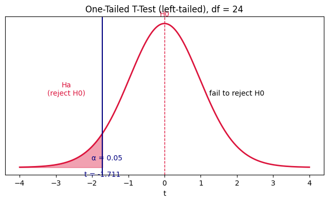
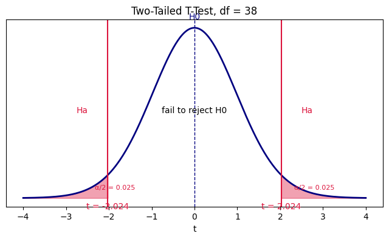
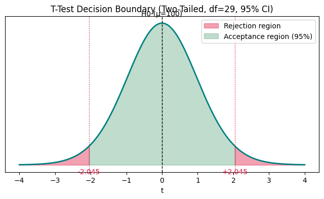
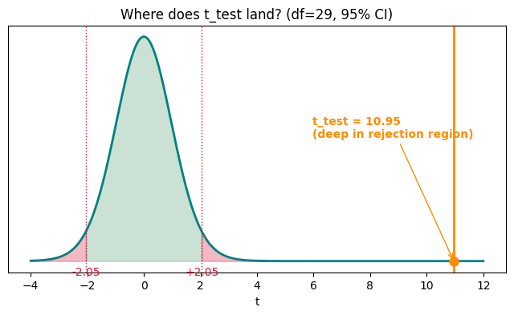
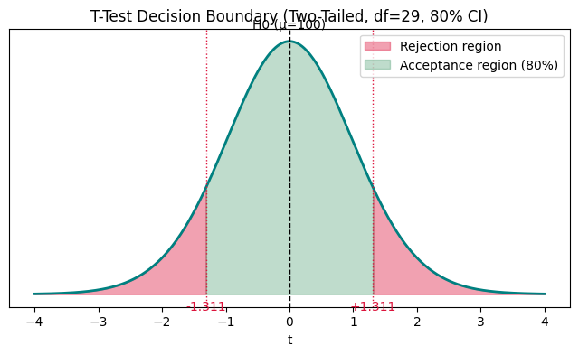
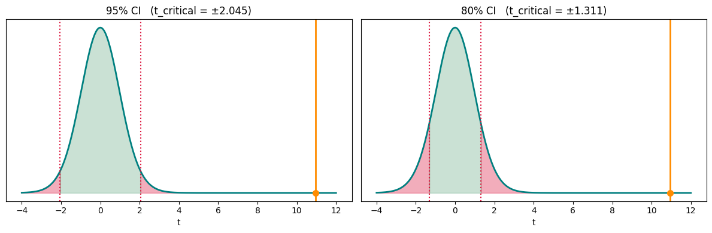

Data science and statistics
T Test
Everything studied in this topic, rendered from the notebooks and notes themselves.
Hypothesis Testing - T-Test
Assumption: data → Normal Distribution
- Population → mean ($\mu$)
- Sample → Mean ($\bar{x}$), Std ($S$)
- No. of samples ($n$) < 30
When the sample size is small (n < 30) and/or the population standard deviation is unknown, we use the t-test instead of the z-test.
T-Test Formula
Where:
- $\bar{x}$ = Sample Mean
- $\mu$ = Population Mean
- $S$ = Std of Sample
- $n$ = No. of samples
Z-Test vs T-Test
| Z-Test | T-Test | |
|---|---|---|
| Sample size | n ≥ 30 | n < 30 |
| Population std | known | unknown (use sample std $S$) |
| Distribution used | Normal (Z) | Student's t-distribution |
import scipy.stats as st import numpy as np
Example 1 (One-Tailed T-Test).
A manufacturer claims that the average weight of a bag of potato chips is 150 grams. A sample of 25 bags is taken, and the average weight is found to be 148 grams, with a standard deviation of 5 grams. Test the manufacturer's claim using a one-tailed t-test with a significance level of 0.05.
Given:
- $\mu = 150$ (claimed population mean)
- $\bar{x} = 148$ (sample mean)
- $n = 25$ (sample size)
- $S = 5$ (sample std)
- $\alpha = 0.05$
Hypotheses:
- $H_0: \mu = 150\ gm$ — the claim is true
- $H_a: \mu < 150\ gm$ — actual average weight is less than claimed (left-tailed, since we're only checking for underfilling, not any deviation)
What are we actually finding out, and why?
We want to know: is the gap between the sample mean (148g) and the claimed mean (150g) big enough to be real, or could it just be random sampling noise? The t-test converts that gap into a standardized score ($t_{test}$) and checks it against how much variation we'd expect by chance alone (the t-distribution for this sample size). If our score falls further into the tail than chance would reasonably allow ($\alpha = 0.05$, i.e. only a 5% chance region), we conclude the underfilling is statistically real and reject the manufacturer's claim.
Step 1 - Degrees of Freedom
We need df because the t-distribution's exact shape (how fat its tails are) depends on sample size — with fewer samples, we're less certain about the true spread, so the tails are fatter and the critical value is larger than a z-score would be.
Step 2 - Critical t-value (from t-table)
Look up the t-table at df = 24, one-tail = 0.05 → $t_{critical} = 1.711$.
Since $H_a: \mu < 150$ is left-tailed, the rejection region sits on the left side of the distribution, so the critical value used for comparison is $t_{critical} = -1.711$.
The plot below reproduces the sketch: the curve is the t-distribution (df=24), the shaded left tail is the Ha (reject $H_0$) rejection region worth $\alpha = 0.05$ of the area, the dashed line at $t=0$ marks $H_0$, and the boundary between them is $t = -1.711$.
import matplotlib.pyplot as plt
df_ = 24
t_crit = st.t.ppf(0.05, df_) # -1.7109
x = np.linspace(-4, 4, 500)
y = st.t.pdf(x, df_)
fig, ax = plt.subplots(figsize=(8, 4))
ax.plot(x, y, color="crimson", linewidth=2)
# shade rejection region (Ha) - left tail
x_reject = np.linspace(-4, t_crit, 100)
ax.fill_between(x_reject, st.t.pdf(x_reject, df_), color="crimson", alpha=0.4)
# H0 dashed centerline
ax.axvline(0, color="crimson", linestyle="--", linewidth=1)
ax.text(0, max(y) * 1.05, "H0", ha="center", color="crimson")
# critical t-value line + label
ax.axvline(t_crit, color="navy", linewidth=1.5)
ax.text(t_crit, -0.01, f"t = {t_crit:.3f}", ha="center", va="top", color="navy")
ax.text(t_crit - 1, max(y) * 0.5, "Ha\n(reject H0)", ha="center", color="crimson")
ax.text(2, max(y) * 0.5, "fail to reject H0", ha="center", color="black")
ax.text(t_crit - 0.3, 0.02, "α = 0.05", color="navy")
ax.set_yticks([])
ax.set_xlabel("t")
ax.set_title("One-Tailed T-Test (left-tailed), df = 24")
plt.show()
Step 3 - Calculate the test statistic
Step 4 - Decision rule
Reject $H_0$ if $t_{test}$ is more extreme (further into the tail) than $t_{critical}$:
This is true, so $t_{test}$ falls inside the rejection region → reject $H_0$, accept $H_a$.
Conclusion: At the 5% significance level, there is enough evidence to say the average bag weight is significantly less than the claimed 150 grams — the manufacturer's claim does not hold up.
x_bar = 148
p_u = 150
s_std = 5
n = 25
alpha = 0.05
df = n - 1
t_critical = st.t.ppf(alpha, df) # left-tailed -> use alpha directly, not 1-alpha
t_test = (x_bar - p_u) / (s_std / np.sqrt(n))
print("df:", df)
print("t_critical:", t_critical)
print("t_test:", t_test)
if t_test < t_critical:
print("Reject H0 -> Ha is right (avg weight < 150 gm)")
else:
print("Fail to reject H0 -> H0 is right (avg weight = 150 gm)")df: 24 t_critical: -1.7108820799094284 t_test: -2.0 Reject H0 -> Ha is right (avg weight < 150 gm)
Example 2 (Two-Sample T-Test, Two-Tailed)
A company wants to test whether there is a difference in productivity between two teams. They randomly select 20 employees from each team and record their productivity scores. The mean productivity score for Team A is 80 with a standard deviation of 5, while the mean productivity score for Team B is 75 with a standard deviation of 6. Test at a 5% level of significance whether there is a difference in productivity between the two teams.
What do the symbols mean?
Before writing down the "Given" values, it helps to be clear on what each symbol stands for:
- $\mu_A$, $\mu_B$ = the true (population) average productivity of every employee on Team A / Team B — the real number we actually care about, but can never observe directly (we'd have to measure every single employee).
- $\bar{x}_A$, $\bar{x}_B$ = the sample mean — the average productivity we measured from the 20 employees we happened to sample from each team.
- $S_A$, $S_B$ = the sample standard deviation — how spread out those 20 sampled scores are around their own sample mean, for each team.
- $n_A$, $n_B$ = the sample size — how many employees were sampled from each team (20 each here).
So $\bar{x}_A, S_A, n_A$ are all things we directly measured from Team A's sample; $\mu_A$ is the unknown truth about Team A we're trying to make a statement about. Same pattern for Team B. The entire test is a way of using the measured sample quantities to infer something about the unknown population means.
Given:
- $\bar{x}_A = 80$, $S_A = 5$, $n_A = 20$ (Team A)
- $\bar{x}_B = 75$, $S_B = 6$, $n_B = 20$ (Team B)
- $\alpha = 0.05$
What is $\alpha$ (the significance level), and where does 0.05 come from?
$\alpha$ is not calculated from the data at all — it's a threshold we choose ourselves, in advance, before ever looking at the samples. It represents how much risk we're willing to accept of making a Type I error: rejecting $H_0$ when $H_0$ is actually true (i.e., concluding the teams are different in productivity when in reality they aren't, and the 5-point gap was just sampling luck).
- $\alpha = 0.05$ means we're willing to accept at most a 5% chance of wrongly rejecting a true $H_0$.
- Equivalently, we're demanding 95% confidence before we'll call the result "significant."
- The value 0.05 is a convention, not something derived from this problem's numbers — it's the most commonly used significance level across statistics and industry (0.01 for stricter tolerance, 0.10 for looser tolerance are the other common choices). The question told us to use it: "Test at a 5% level of significance."
Once $\alpha$ is chosen, it directly determines how far into the tail(s) of the t-distribution counts as "too surprising to be chance" — that boundary is exactly $t_{critical}$, computed in Step 2 below. For a two-tailed test like this one, the 5% risk is split evenly between the left and right tails ($\alpha/2 = 0.025$ each), because being "different" could mean Team A > Team B or Team A < Team B — both directions have to share the same total 5% risk budget.
Hypotheses:
- $H_0: \mu_A - \mu_B = 0$ — no difference in productivity between the two teams
- $H_a: \mu_A - \mu_B \neq 0$ — there is a difference (two-tailed, since we're checking for any difference, not a specific direction)
One-tailed or two-tailed — how do we decide?
This is not a fixed rule ("always use one-tail" or "always use two-tail") — it depends entirely on how the question is worded, which decides how $H_a$ gets written:
- Example 1 asked us to check the manufacturer's claim specifically for underfilling — the concern was only "is the true average weight less than what's claimed?" That's a claim with a direction, so $H_a: \mu < 150$ pointed one way only → one-tailed test, with the whole $\alpha$ sitting in a single tail.
- Example 2 only asks "is there a difference in productivity between the two teams?" — it never says "is Team A more productive than Team B." Team A being higher than B, or Team A being lower than B, are both valid ways for "a difference" to exist. So $H_a: \mu_A - \mu_B \neq 0$ has to cover both directions → two-tailed test, with $\alpha$ split across both tails.
Rule of thumb — look at the wording of the claim being tested:
- "greater than," "less than," "more than," "increases," "decreases," "underfills" (a specific direction is claimed) → one-tailed.
- "different from," "not equal to," "a difference exists," "changed" (no direction is claimed, only that something changed) → two-tailed.
In practice, two-tailed tests are actually the more common default, precisely because most real questions (like this one) don't come with a built-in reason to rule out one direction ahead of time. You only use a one-tailed test when the problem itself gives you a specific, justified direction to test — like Example 1's underfilling concern. Nothing here tells us Team A can only be better (or only worse) than Team B, so both directions have to stay open, which is why Step 2 below computes two critical values ($\pm 2.024$) instead of one.
Why do we hypothesize about $\mu_A - \mu_B$ instead of $\mu_A$ and $\mu_B$ separately?
In Example 1 there was one unknown ($\mu$) and one known reference point (the manufacturer's claim, 150g), so we tested $\mu$ directly against a number. Here there are two unknowns ($\mu_A$ and $\mu_B$) and neither has a known reference value — we only want to know how they compare to each other.
So instead of testing two separate unknowns, we combine them into a single unknown quantity, their difference $\mu_A - \mu_B$, and test that against zero:
- "No difference between the teams" means the two population means are equal, i.e. $\mu_A - \mu_B = 0$. That is exactly the "nothing going on" default position, so it becomes $H_0$.
- "There is a difference" simply means that difference is not zero — $\mu_A - \mu_B \neq 0$ — which becomes $H_a$, the logical opposite of $H_0$.
This is also why the formula's numerator is written as $(\bar{x}_A - \bar{x}_B) - (\mu_A - \mu_B)$: it compares the difference we observed in our samples ($\bar{x}_A - \bar{x}_B = 5$) against the difference we hypothesized for the populations ($\mu_A - \mu_B$, assumed $0$ under $H_0$). Since $H_0$ sets that hypothesized difference to $0$, the term disappears and the formula simplifies to just $\bar{x}_A - \bar{x}_B$ on top — see the formula cell below.
What are we actually finding out, and why?
This time we're comparing two sample means to each other instead of a sample mean to a known population mean. The question is: is the 5-point gap between Team A (80) and Team B (75) large enough to reflect a real difference in productivity, or could it just be noise from picking 20 random employees per team? Because we're testing for a difference in either direction (A could be higher or lower than B), the rejection region is split across both tails of the t-distribution — this is what makes it a two-tailed test, unlike Example 1's one-tailed test.
Two-Sample T-Test Formula
Where:
- $\bar{x}_A, \bar{x}_B$ = Sample means of Team A, Team B
- $\mu_A - \mu_B$ = Hypothesized difference in population means (= 0 under $H_0$)
- $S_A, S_B$ = Sample standard deviations of Team A, Team B
- $n_A, n_B$ = Sample sizes of Team A, Team B
Since $H_0$ assumes $\mu_A - \mu_B = 0$, that term drops out and the formula simplifies to:
Step 1 - Degrees of Freedom
For a two-sample t-test, df is the sum of both sample sizes minus 2 (one degree of freedom is "spent" estimating each team's sample mean).
Step 2 - Critical t-value (from t-table)
Since this is two-tailed, $\alpha = 0.05$ is split evenly across both tails: $\alpha/2 = 0.025$ on each side.
Look up the t-table at df = 38, two-tail = 0.05 (i.e. one-tail = 0.025) → $t_{critical} \approx \pm 2.024$.
The plot below reproduces the sketch: the curve is the t-distribution (df=38), both shaded tails are the Ha (reject $H_0$) rejection regions — each worth $\alpha/2 = 0.025$ of the area — the dashed line at $t=0$ marks $H_0$, and the boundaries are $t = -2.024$ and $t = +2.024$.
import matplotlib.pyplot as plt
import scipy.stats as st
import numpy as np
df_ = 38
t_crit = st.t.ppf(0.975, df_) # 2.0244
x = np.linspace(-4, 4, 500)
y = st.t.pdf(x, df_)
fig, ax = plt.subplots(figsize=(8, 4))
ax.plot(x, y, color="navy", linewidth=2)
# shade rejection regions (Ha) - both tails
x_left = np.linspace(-4, -t_crit, 100)
x_right = np.linspace(t_crit, 4, 100)
ax.fill_between(x_left, st.t.pdf(x_left, df_), color="crimson", alpha=0.4)
ax.fill_between(x_right, st.t.pdf(x_right, df_), color="crimson", alpha=0.4)
# H0 dashed centerline
ax.axvline(0, color="navy", linestyle="--", linewidth=1)
ax.text(0, max(y) * 1.05, "H0", ha="center", color="navy")
# critical t-value lines + labels
ax.axvline(-t_crit, color="crimson", linewidth=1.5)
ax.axvline(t_crit, color="crimson", linewidth=1.5)
ax.text(-t_crit, -0.01, f"t = {-t_crit:.3f}", ha="center", va="top", color="crimson")
ax.text(t_crit, -0.01, f"t = {t_crit:.3f}", ha="center", va="top", color="crimson")
ax.text(-t_crit - 0.6, max(y) * 0.5, "Ha", ha="center", color="crimson")
ax.text(t_crit + 0.6, max(y) * 0.5, "Ha", ha="center", color="crimson")
ax.text(0, max(y) * 0.5, "fail to reject H0", ha="center", color="black")
ax.text(-t_crit - 0.3, 0.02, "\u03b1/2 = 0.025", color="crimson", fontsize=8)
ax.text(t_crit + 0.3, 0.02, "\u03b1/2 = 0.025", color="crimson", fontsize=8)
ax.set_yticks([])
ax.set_xlabel("t")
ax.set_title("Two-Tailed T-Test, df = 38")
plt.show()
Step 3 - Calculate the test statistic
Step 4 - Decision rule
For a two-tailed test, reject $H_0$ if $t_{test}$ is more extreme than $t_{critical}$ in either direction:
This is true, so $t_{test}$ falls inside the rejection region → reject $H_0$, accept $H_a$.
Conclusion: At the 5% significance level, there is enough evidence to say there is a statistically significant difference in productivity between Team A and Team B — Team A's higher average productivity is not just due to random sampling.
x_bar_A = 80
s_A = 5
n_A = 20
x_bar_B = 75
s_B = 6
n_B = 20
alpha = 0.05
df = n_A + n_B - 2
se = np.sqrt((s_A**2 / n_A) + (s_B**2 / n_B))
t_test = (x_bar_A - x_bar_B) / se
t_critical = st.t.ppf(1 - alpha / 2, df) # two-tailed -> use alpha/2
print("df:", df)
print("standard error:", se)
print("t_critical: +-", t_critical)
print("t_test:", t_test)
if abs(t_test) > t_critical:
print("Reject H0 -> Ha is right (there IS a difference in productivity)")
else:
print("Fail to reject H0 -> H0 is right (no significant difference in productivity)")df: 38 standard error: 1.746424919657298 t_critical: +- 2.0243941639119694 t_test: 2.862991671569341 Reject H0 -> Ha is right (there IS a difference in productivity)
Example 3 (One-Sample T-Test, Two-Tailed, 95% Confidence Interval)
In the population, the average IQ is 100. A team of researchers wants to test a new medication to see if it has either a positive or negative effect on intelligence, or no effect at all. A sample of 30 participants who have taken the medication has a mean of 140, with a standard deviation of 20. Did the medication affect intelligence? (CI = 95%)
Given:
- $\mu = 100$ (population mean IQ)
- $n = 30$ (sample size)
- $\bar{x} = 140$ (sample mean)
- $S = 20$ (sample std)
- $CI = 95%$
Because the researchers are checking for either a positive or a negative effect (not specifically one direction), this is a two-tailed test.
Step 1 - State the Null and Alternate Hypothesis
- $H_0$ (Null Hypothesis) — the medication has no effect on IQ; the sample mean of 140 is just due to random sampling variation.
- $H_1$ (Alternate Hypothesis) — the medication does affect IQ (could be higher or lower), so we test both directions at once.
Step 2 - Significance Value
$\alpha$ is the probability of a Type I error — rejecting $H_0$ when it's actually true — that we're willing to accept. We fix this before looking at the sample data. Because this is two-tailed, this risk is split evenly between both tails of the distribution:
Step 3 - Degrees of Freedom
We use the t-distribution (not the z-distribution) here because the population standard deviation $\sigma$ is unknown — we only have the sample standard deviation $S = 20$. Estimating the spread from the sample itself introduces extra uncertainty, so the t-distribution has fatter tails than the normal distribution, and df controls exactly how fat. The -1 reflects that one degree of freedom is "used up" estimating the sample mean $\bar{x}$ itself.
import scipy.stats as st import numpy as np import matplotlib.pyplot as plt
Step 4 - Decision Boundary
Look up the t-table at df = 29, two-tailed $\alpha = 0.05$ (i.e. 0.025 in each tail):
The region between $-2.045$ and $+2.045$ is the acceptance region (fail to reject $H_0$). Anything beyond that, in either tail, is the rejection region (reject $H_0$).
Decision rule: If $t_{test} < -2.045$ or $t_{test} > 2.045$, reject the null hypothesis.
df = 29
alpha = 0.05
t_crit = st.t.ppf(1 - alpha / 2, df) # 2.045
x = np.linspace(-4, 4, 500)
y = st.t.pdf(x, df)
fig, ax = plt.subplots(figsize=(8, 4))
ax.plot(x, y, color="teal", linewidth=2)
# rejection regions - both tails
x_left = np.linspace(-4, -t_crit, 100)
x_right = np.linspace(t_crit, 4, 100)
ax.fill_between(x_left, st.t.pdf(x_left, df), color="crimson", alpha=0.4, label="Rejection region")
ax.fill_between(x_right, st.t.pdf(x_right, df), color="crimson", alpha=0.4)
# acceptance region
x_mid = np.linspace(-t_crit, t_crit, 200)
ax.fill_between(x_mid, st.t.pdf(x_mid, df), color="seagreen", alpha=0.3, label="Acceptance region (95%)")
ax.axvline(0, color="black", linestyle="--", linewidth=1)
ax.text(0, max(y) * 1.05, "H0 (μ=100)", ha="center")
ax.axvline(-t_crit, color="crimson", linestyle=":", linewidth=1)
ax.axvline(t_crit, color="crimson", linestyle=":", linewidth=1)
ax.text(-t_crit, -0.01, f"-{t_crit:.3f}", ha="center", va="top", color="crimson")
ax.text(t_crit, -0.01, f"+{t_crit:.3f}", ha="center", va="top", color="crimson")
ax.legend()
ax.set_yticks([])
ax.set_xlabel("t")
ax.set_title(f"T-Test Decision Boundary (Two-Tailed, df={df}, 95% CI)")
plt.show()
Step 5 - Calculate the T-Test Statistic
x_bar = 140
mu = 100
S = 20
n = 30
alpha = 0.05
df = n - 1
t_critical = st.t.ppf(1 - alpha / 2, df) # two-tailed -> 2.045
t_test = (x_bar - mu) / (S / np.sqrt(n))
print("df:", df)
print("t_critical: +-", round(t_critical, 4))
print("t_test:", round(t_test, 4))df: 29 t_critical: +- 2.0452 t_test: 10.9545
Step 6 - Conclusion
Decision rule: If $t_{test}$ is less than $-2.045$ or greater than $+2.045$, reject the null hypothesis.
This is true — $t_{test}$ falls far inside the rejection region → reject $H_0$, accept $H_1$.
Conclusion: At the 95% confidence level, there is enough evidence to say the medication had a statistically significant effect on intelligence — the jump from an average IQ of 100 to a sample mean of 140 is extremely unlikely to be random sampling noise.
if abs(t_test) > t_critical:
print("Reject H0 -> H1 is right (medication DOES affect intelligence)")
else:
print("Fail to reject H0 -> H0 holds (no significant evidence of an effect)")Reject H0 -> H1 is right (medication DOES affect intelligence)
Plotting the actual t_test value
The earlier plot only showed the critical boundaries ($\pm 2.045$). Here we mark the actual computed value, $t_{test} \approx 10.96$, on the same curve — it lands so far into the tail that it's off the visible range of a standard plot, which visually drives home just how strong this result is.
x = np.linspace(-4, 12, 500)
y = st.t.pdf(x, df)
fig, ax = plt.subplots(figsize=(8, 4))
ax.plot(x, y, color="teal", linewidth=2)
# rejection regions
x_left = np.linspace(-4, -t_critical, 100)
x_right = np.linspace(t_critical, 12, 100)
ax.fill_between(x_left, st.t.pdf(x_left, df), color="crimson", alpha=0.3)
ax.fill_between(x_right, st.t.pdf(x_right, df), color="crimson", alpha=0.3)
# acceptance region
x_mid = np.linspace(-t_critical, t_critical, 200)
ax.fill_between(x_mid, st.t.pdf(x_mid, df), color="seagreen", alpha=0.25)
# critical boundaries
ax.axvline(-t_critical, color="crimson", linestyle=":", linewidth=1)
ax.axvline(t_critical, color="crimson", linestyle=":", linewidth=1)
ax.text(-t_critical, -0.01, f"-{t_critical:.2f}", ha="center", va="top", color="crimson")
ax.text(t_critical, -0.01, f"+{t_critical:.2f}", ha="center", va="top", color="crimson")
# actual test statistic
ax.axvline(t_test, color="darkorange", linewidth=2)
ax.plot(t_test, st.t.pdf(t_test, df), "o", color="darkorange", markersize=8, zorder=5)
ax.annotate(f"t_test = {t_test:.2f}\n(deep in rejection region)",
xy=(t_test, st.t.pdf(t_test, df)),
xytext=(t_test - 5, max(y) * 0.55),
arrowprops=dict(arrowstyle="->", color="darkorange"),
color="darkorange", fontweight="bold")
ax.set_yticks([])
ax.set_xlabel("t")
ax.set_title("Where does t_test land? (df=29, 95% CI)")
plt.show()
FAQ
1. Why is this a t-test and not a z-test?
The sample size is $n = 30$ and, more importantly, we're only given the sample standard deviation ($S = 20$), not the true population standard deviation $\sigma$. Whenever $\sigma$ is unknown, we must estimate spread from the sample, which adds uncertainty — the t-distribution (with its fatter tails, controlled by df) accounts for that. If the population $\sigma$ were known, we'd use a z-test instead, even at $n=30$.
2. Why two-tailed instead of one-tailed?
The question explicitly asks whether the medication has "either a positive or negative effect... or no effect at all." Since we care about a deviation in either direction, the rejection region must be split across both tails of the distribution ($\alpha/2$ each), giving $H_1: \mu \neq 100$. If the question instead asked "does the medication increase IQ," that would be one-tailed with $H_1: \mu > 100$.
3. Why is $t_{test}$ so much larger than $t_{critical}$ here? What does the "40-point jump" mean?
The "40-point jump" is just the raw, unscaled gap in the formula's numerator:
It's the plain difference between what we observed (sample mean IQ = 140) and what $H_0$ claims (population mean IQ = 100), measured in ordinary IQ points — before it gets divided by anything or turned into a standardized score.
Step A — is 40 points a lot, for one person? On its own, "40 points" is hard to judge — it depends on how much IQ scores naturally bounce around. The sample's spread is $S = 20$, so $40 / 20 = 2$: the gap equals 2 individual standard deviations. For a single person, landing 2 standard deviations from the mean is somewhat unusual but not extraordinary.
Step B — but we're not looking at one person, we're looking at the average of 30 people. Averages are far more stable than individuals — random ups and downs across 30 different people mostly cancel out. The formula captures this by dividing by the standard error of the mean instead of the raw standard deviation:
Notice $SE \approx 3.65$ is roughly 5.5× smaller than $S = 20$ — that shrinkage is exactly the benefit of averaging over 30 samples instead of looking at just 1.
Step C — put the same 40-point gap over this much smaller yardstick:
So the same 40-point gap that was "only" 2 standard deviations at the individual level becomes ~11 standard errors at the sample-mean level — because the yardstick used to judge it (SE) is so much finer than the yardstick for individuals (S).
Intuition: one person scoring 40 points above average is mildly surprising. But the average of 30 randomly chosen people scoring 40 points above the population average — with essentially no overlap in who's selected — is almost never going to happen just by chance. That's the whole point of dividing by $SE$ instead of $S$: it measures the gap in units of "how much sampling wobble we'd realistically expect for a mean of 30 people," not "how much any one person's score can wobble."
Why this makes $t_{test} \gg t_{critical}$: $t_{critical} \approx 2.045$ represents "about 2 standard errors" — the largest wobble we'd tolerate as plausibly due to chance at 95% confidence. Our actual result is ~11 standard errors out — more than 5× further than the threshold — so it isn't a borderline call at all; it's a result that's essentially impossible to get under $H_0$ by random sampling alone.
4. What does "reject $H_0$" actually tell us, and what doesn't it tell us?
It tells us the difference is statistically significant — i.e., very unlikely to be random noise. It does not by itself prove the medication causes the IQ change (that depends on the study design, e.g. whether there was a control group, randomization, blinding, etc.), and it doesn't tell us anything about whether a 40-point jump is practically meaningful — that's a separate question from statistical significance.
5. How would the conclusion change with an 80% confidence interval instead of 95%?
A lower CI (80%) means a larger $\alpha = 0.20$, split into $\alpha/2 = 0.10$ per tail, which produces a smaller $|t_{critical}|$ (the acceptance region shrinks). Since our $t_{test} \approx 10.96$ is already far beyond the 95% CI's critical value, it would just as easily fall in the rejection region under an 80% CI — the conclusion (reject $H_0$) doesn't change, but the margin by which we reject does. See the companion notebook for the worked 80% CI version of this same problem.
Example 3b (One-Sample T-Test, Two-Tailed, 80% Confidence Interval)
Same problem as the 95% CI notebook — only the confidence level changes. In the population, the average IQ is 100. A team of researchers wants to test a new medication to see if it has either a positive or negative effect on intelligence, or no effect at all. A sample of 30 participants who have taken the medication has a mean of 140, with a standard deviation of 20. Did the medication affect intelligence? (CI = 80%)
Given:
- $\mu = 100$ (population mean IQ)
- $n = 30$ (sample size)
- $\bar{x} = 140$ (sample mean)
- $S = 20$ (sample std)
- $CI = 80%$
Because the researchers are checking for either a positive or a negative effect (not specifically one direction), this is still a two-tailed test — only $CI$ (and therefore $\alpha$ and the critical value) changes.
Step 1 - State the Null and Alternate Hypothesis
The hypotheses themselves never depend on the confidence level — they come purely from the wording of the question ("positive or negative effect, or no effect"). Only the threshold for deciding changes when $CI$ changes.
Step 2 - Significance Value
This time we're only willing to be 80% confident, so we tolerate a bigger risk of a Type I error: $\alpha = 0.20$ instead of $0.05$. Split evenly across both tails (two-tailed test):
Compare this to the 95% CI case, where $\alpha/2$ was only $0.025$ — a lower confidence level means a wider, more lenient rejection region on each side.
Step 3 - Degrees of Freedom
df only depends on the sample size, not on the chosen confidence level — so this is identical to the 95% CI case.
import scipy.stats as st import numpy as np import matplotlib.pyplot as plt
Step 4 - Decision Boundary
Look up the t-table at df = 29, two-tailed $\alpha = 0.20$ (i.e. 0.10 in each tail):
The region between $-1.311$ and $+1.311$ is the acceptance region (fail to reject $H_0$). Anything beyond that, in either tail, is the rejection region (reject $H_0$).
Notice how much narrower this acceptance region is compared to the 95% CI case ($\pm 2.045$) — at a lower confidence level, we require less evidence before rejecting $H_0$.
Decision rule: If $t_{test} < -1.311$ or $t_{test} > 1.311$, reject the null hypothesis.
df = 29
alpha = 0.20
t_crit = st.t.ppf(1 - alpha / 2, df) # ~1.311
x = np.linspace(-4, 4, 500)
y = st.t.pdf(x, df)
fig, ax = plt.subplots(figsize=(8, 4))
ax.plot(x, y, color="teal", linewidth=2)
# rejection regions - both tails
x_left = np.linspace(-4, -t_crit, 100)
x_right = np.linspace(t_crit, 4, 100)
ax.fill_between(x_left, st.t.pdf(x_left, df), color="crimson", alpha=0.4, label="Rejection region")
ax.fill_between(x_right, st.t.pdf(x_right, df), color="crimson", alpha=0.4)
# acceptance region
x_mid = np.linspace(-t_crit, t_crit, 200)
ax.fill_between(x_mid, st.t.pdf(x_mid, df), color="seagreen", alpha=0.3, label="Acceptance region (80%)")
ax.axvline(0, color="black", linestyle="--", linewidth=1)
ax.text(0, max(y) * 1.05, "H0 (μ=100)", ha="center")
ax.axvline(-t_crit, color="crimson", linestyle=":", linewidth=1)
ax.axvline(t_crit, color="crimson", linestyle=":", linewidth=1)
ax.text(-t_crit, -0.01, f"-{t_crit:.3f}", ha="center", va="top", color="crimson")
ax.text(t_crit, -0.01, f"+{t_crit:.3f}", ha="center", va="top", color="crimson")
ax.legend()
ax.set_yticks([])
ax.set_xlabel("t")
ax.set_title(f"T-Test Decision Boundary (Two-Tailed, df={df}, 80% CI)")
plt.show()
Step 5 - Calculate the T-Test Statistic
This step is completely unaffected by the confidence level — $t_{test}$ only depends on the sample data ($\bar{x}, \mu, S, n$), never on $\alpha$ or $CI$. Only $t_{critical}$ (Step 4) changes with confidence level.
x_bar = 140
mu = 100
S = 20
n = 30
alpha = 0.20
df = n - 1
t_critical = st.t.ppf(1 - alpha / 2, df) # two-tailed -> ~1.311
t_test = (x_bar - mu) / (S / np.sqrt(n))
print("df:", df)
print("t_critical: +-", round(t_critical, 4))
print("t_test:", round(t_test, 4))df: 29 t_critical: +- 1.3114 t_test: 10.9545
Step 6 - Conclusion
Decision rule: If $t_{test}$ is less than $-1.311$ or greater than $+1.311$, reject the null hypothesis.
This is true — $t_{test}$ falls far inside the rejection region → reject $H_0$, accept $H_1$.
Conclusion: At the 80% confidence level too, there is enough evidence to say the medication had a statistically significant effect on intelligence. The result doesn't change from the 95% CI case — but here it's an even more lopsided call, since the bar for rejection ($\pm 1.311$) is much lower and $t_{test} \approx 10.96$ clears it by an even wider margin.
if abs(t_test) > t_critical:
print("Reject H0 -> H1 is right (medication DOES affect intelligence)")
else:
print("Fail to reject H0 -> H0 holds (no significant evidence of an effect)")Reject H0 -> H1 is right (medication DOES affect intelligence)
Side by Side — 95% CI vs 80% CI
Same data, same $t_{test} \approx 10.96$ — only the acceptance/rejection boundary moves. A lower confidence level shrinks the acceptance region, making it easier to reject $H_0$ (though here it was already an easy call at 95%).
dfree = 29
t_test_val = 10.9545
alphas = {"95% CI": 0.05, "80% CI": 0.20}
x = np.linspace(-4, 12, 500)
y = st.t.pdf(x, dfree)
fig, axes = plt.subplots(1, 2, figsize=(12, 4), sharey=True)
for ax, (label, a) in zip(axes, alphas.items()):
t_c = st.t.ppf(1 - a / 2, dfree)
ax.plot(x, y, color="teal", linewidth=2)
x_left = np.linspace(-4, -t_c, 100)
x_right = np.linspace(t_c, 12, 100)
ax.fill_between(x_left, st.t.pdf(x_left, dfree), color="crimson", alpha=0.35)
ax.fill_between(x_right, st.t.pdf(x_right, dfree), color="crimson", alpha=0.35)
x_mid = np.linspace(-t_c, t_c, 200)
ax.fill_between(x_mid, st.t.pdf(x_mid, dfree), color="seagreen", alpha=0.25)
ax.axvline(t_c, color="crimson", linestyle=":")
ax.axvline(-t_c, color="crimson", linestyle=":")
ax.axvline(t_test_val, color="darkorange", linewidth=2)
ax.plot(t_test_val, st.t.pdf(t_test_val, dfree), "o", color="darkorange", markersize=7, zorder=5)
ax.set_yticks([])
ax.set_xlabel("t")
ax.set_title(f"{label} (t_critical = ±{t_c:.3f})")
plt.tight_layout()
plt.show()
print(f"{'CI':<10}{'alpha':<10}{'t_critical':<14}{'t_test':<10}{'Decision'}")
for label, a in alphas.items():
t_c = st.t.ppf(1 - a / 2, dfree)
decision = "Reject H0" if abs(t_test_val) > t_c else "Fail to reject H0"
print(f"{label:<10}{a:<10}{t_c:<14.4f}{t_test_val:<10.4f}{decision}")CI alpha t_critical t_test Decision 95% CI 0.05 2.0452 10.9545 Reject H0 80% CI 0.2 1.3114 10.9545 Reject H0

FAQ
1. Why does the critical value shrink from 2.045 (95% CI) to 1.311 (80% CI)?
Confidence level and critical value move in the same direction. A higher CI (like 95%) demands stronger evidence before rejecting $H_0$, so it pushes the critical value further out into the tail (a wider acceptance region). A lower CI (like 80%) is more lenient — we're only asking for 80% confidence, so we accept a bigger risk of a Type I error ($\alpha = 0.20$ instead of $0.05$), which pulls the critical value inward (a narrower acceptance region, easier to spill into the rejection zone).
2. Does the sample data ($\bar{x}, S, n$) change with the confidence level?
No. $t_{test}$ is computed purely from what was observed — the sample mean, sample std, and sample size — none of which have anything to do with how confident we choose to be. Only $t_{critical}$ (Step 4) depends on $CI$. This is why $t_{test} \approx 10.96$ is identical in both the 95% and 80% CI versions of this notebook.
3. If both CIs lead to "reject $H_0$," why bother computing both?
Because it won't always be this clear-cut. Here, $t_{test} \approx 10.96$ is so extreme that it clears both thresholds easily — the medication's effect is obvious regardless of how strict we are. But in a borderline case (say $t_{test} = 1.5$), the 95% CI threshold (2.045) would say "fail to reject $H_0$," while the 80% CI threshold (1.311) would say "reject $H_0$" — the same data leading to opposite conclusions purely because of the confidence level chosen. That's exactly why $\alpha$/$CI$ must be picked before looking at the data, not adjusted afterward to get the answer you want.
4. When would someone actually use an 80% CI instead of 95%?
95% (or 99%) is the standard for most formal research, medicine, and any decision where a false positive is costly (e.g., wrongly approving a drug as effective). An 80% CI is more common in exploratory or low-stakes settings — e.g., early-stage screening, A/B tests where you're just looking for promising leads to investigate further, or internal business decisions where being wrong occasionally is cheap and moving fast matters more than rigor.
5. How does this compare to the 95% CI version of this same problem?
| 95% CI | 80% CI | |
|---|---|---|
| $\alpha$ | 0.05 | 0.20 |
| $\alpha/2$ (two-tailed) | 0.025 | 0.10 |
| $t_{critical}$ | $\pm 2.045$ | $\pm 1.311$ |
| $t_{test}$ | 10.96 | 10.96 |
| Decision | Reject $H_0$ | Reject $H_0$ |
Same hypotheses, same data, same $t_{test}$ — the only thing that moved is where the goalposts (critical value) sit.
✍️ Handwritten notes
The pages written by hand while working through this topic — the version that came before the tidy write-up. Click any page to enlarge.